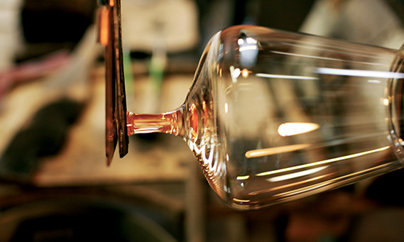

HISTORY
In the northern part of Lower-Austria, the tradition of glass blowing goes back to the early 14th century. The Zalto family, a glassmaking dynasty whose roots reach back to Venice, settled down in this region six generations ago. Since then, Zalto has been producing high quality mouth-blown glass in Neunagelberg and has made a name for itself among bon vivants beyond all borders.

DENK’ART DESIGN
The Zalto Denk'Art Glasses were named after Father Hans Denk, the Austrian wine priest who has spent decades in the study and tasting of wines, and is one of the most valued wine experts in Austria. Father Denk guided the glassmakers in the design of each bowl to elicite the best qualities for the type or style of wine it is meant for.

THE ANGLES
The curve of the bowls are tilted at the angles of 24°, 48° and 72°, which are in accordance to the tilt angles of the Earth. The ancient Romans utilized this triumvirate of angles with their supply repositories, finding that produce stayed fresh for a longer time, and that it also showed improved taste. Due to these cosmic parallels, Zalto believes that a wine can reach its utmost potential in a Denk`Art glass.

Unique attributes
From the first touch, each Zalto glass distinguishes itself from all other glasses. From the perfectly executed balance to the extraordinary design, the achievement of the Denk`Art line are glasses that seem nearly too delicate to hold, and yet they are made for just that. This is glassware that stands at the rarefied point where form meets function. This is art.
MOdern elegance
Despite its feather-light weight and delicate edges, the Denk'Art series of glasses maintains all the best attributes of a modern day glass as far as care and longevity are concerned. They are lead-free and resistant against clouding. Denk`Art glasses may be washed in the dishwasher and should be considered your everyday glass as well as the glass to use for your most special occasions.

Etching
Zalto can customize your wine glasses with special engravings, such as your corporate logo, initials and special commemorative event information, each one done by hand. The etching may be done on the bowl or foot of the glass - great for corporate gifting, VIP events, weddings and clubs.

PROFESSIONAL RECOGNITION
In December 2009, Stern magazine of Germany conducted the most comprehensive and independent testing thus far of the world's finest wine stemware. The testing was in ‘blind' conditions. The judges tasted the same three wines out of 10 different glasses. The Professional Jury voted Zalto as the finest glass for all three wines tasted, receiving three 1st Place awards.